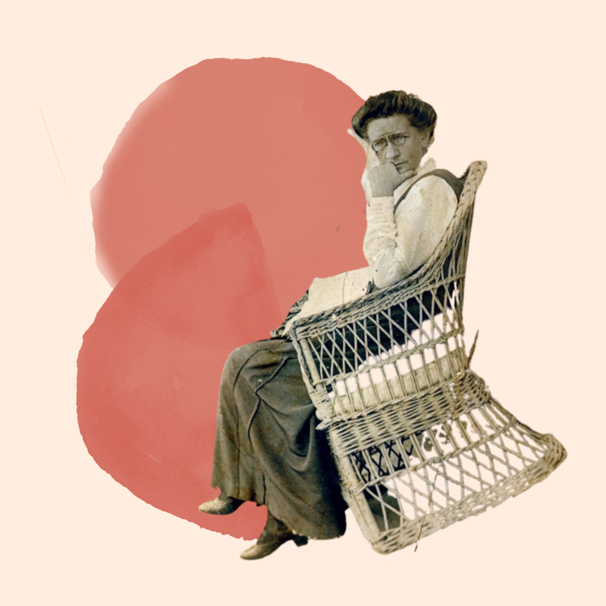
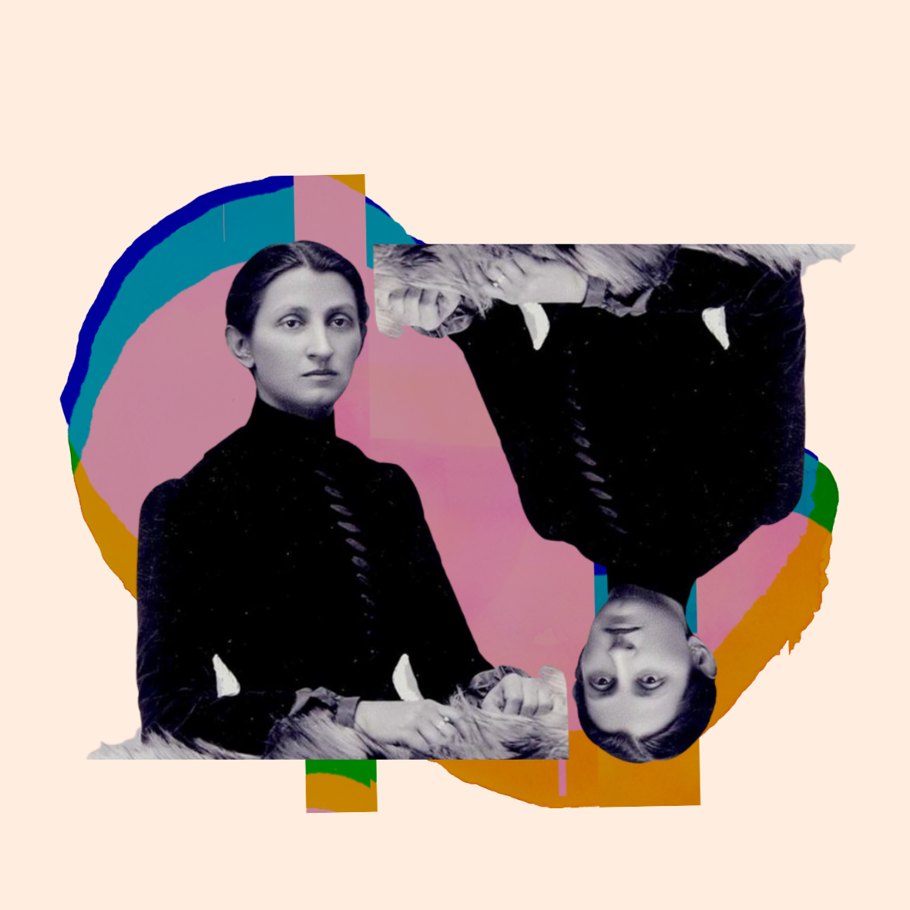
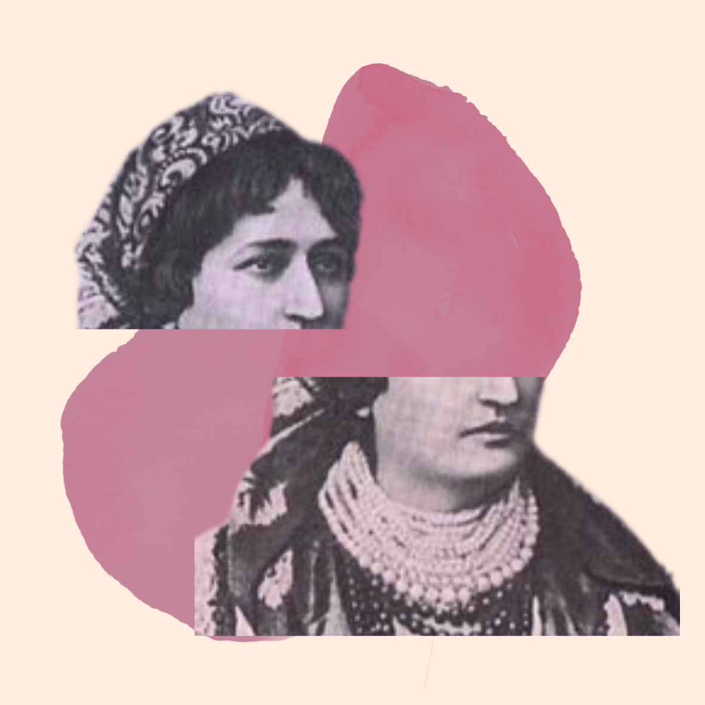

Navchena
A digital project about Ukrainian women at the end of the 19th century
About
This is a final Digital Humanities project made by me, Violetta Karpenko, a fourth-year student at Minerva Schools at KGI. It explores the life of educated Ukrainian females on the verge of the 20th century. I find its utmost value in
- turning history learning into a fun experiences
- bringing together concepts from multiple disciplines, like feminism, history theory, and digital humanities.
“Usually intelligentsia is called the social class, whose representatives are occupied with intellectual, primarily creative work, politics, development and popularization of culture, but such definition does not fully describe that social class in the context of then Ukrainian realities. One of the key signs of belonging to the intelligentsia in Ukrainian understanding at that time was education: a person who was educated could already claim to be part of the intelligentsia.” Kateryna Kobchenko in Ukrainian women in the furnace of modernization, 2017
Given the context of female rights at the time, receiving any education was already going against the norm. My work (unfortunately or not) does not focus on low-class women but rather on those who were not conforming to the existing social rules and while they were doing it in many different ways, one of the unifying features was their education! Education as the first step to empowerment and social change. Therefore, I decided to call this project Navchena - which from Ukrainian translates as educated or trained female. It has another layer of meaning, however, implying that someone else has taught her, showing that, however empowering the education at the time was, it was still brought by men and could only be allowed by the father of the household.
Introduction
Hi, I am Sofia Rusova I lived at around the same time as your great-grandmother, and today I hope to tell you more about her life by exploring my own life and that of the other women in what is now Ukraine in the end of 19th century. Take a moment and ask yourself or your mother: has your great-grandmother was able to get education? Primary? Secondary? University degree? Whether it is a ‘yes’, or a ‘no’, today I hope to help you explain why.  I myself was an educator, and public activist. If you were to read my resume it would have things like:
- created a new system of pedagogy based on things we love and promote in our education today;
- founded the first national kindergarten in Ukraine;
- led National organization of teachers;
- was a member of the Ukrainian Central Government, where I led the Department of pre-school and extra-curricular education;
- was one of the founders of the women’s movement in Ukraine.
Now as I boosted some of that credibility, let’s go on that journey into the past.
Quiz
Let me ask you a couple of questions to situate you in the time and place. Whenever you answer yes, I will tell you about a women, astonishing individual from the past, who, in some ways, was just like you, despite 100 years of difference.
Do you enjoy performing on stage?
Check the box if YES.
Have you ever been in love with the person from the counter-culture?
Check the box if YES.
Are you not ethnically from your country of birth but feel like you belong here?
Check the box if YES.
Have you ever had to give up your interests for your family?
Check the box if YES.
Have you ever lived in another country?
Check the box if YES.
Do you earn by writing?
Check the box if YES.
Would you be able to/have you ever had more than one partner at a time?
Check the box if YES.
Would you like to settle down in a small town?
Check the box if YES.
Do you like participating in hot political debates online?
Check the box if YES.
Have you ever managed a work of the group of people?
Check the box if YES.
Do you live with parents?
Check the box if YES.
Have you ever had a private teacher?
Check the box if YES.
Would you move to another place to get high-quality education?
Check the box if YES.
Do you enjoy implementing crazy ideas?
Check the box if YES.
Do you believe that education in school should nurture a national idea?
Check the box if YES.
Do you believe that the current educational systems should be reformed?
Check the box if YES.
This section allows you to explore more women from the time!
Maria Vilins’ka
 Also known as Marco Vovchok. She was one of the pioneering females in Ukrainian literature, wrote under the male name, and was the first one to translate Jules Verne into Russian, married a dissident to escape from her relatives. She travelled a lot around Europe meeting her numerous lovers. After high life in European capitals, settled down in a small town in the south of the Russian Empire.
Also known as Marco Vovchok. She was one of the pioneering females in Ukrainian literature, wrote under the male name, and was the first one to translate Jules Verne into Russian, married a dissident to escape from her relatives. She travelled a lot around Europe meeting her numerous lovers. After high life in European capitals, settled down in a small town in the south of the Russian Empire.
Sofia Morachevs’ka
 The first female in the Austro-Hungarian empire to get a PhD of medicine. She left her home and went all the way to Zurich to get a degree (it was the only place at that time she was legally allowed to do so - the entire crowd gathered when she was defending her thesis). She spent her life serving people and bringing Western innovations in medicine (like treating cervical cancer with radium) back to her region.
Natalia Kobylyans’ka
 this is her story
Mobility
Meta
Here you can find the documentation of my work and the detailed explanation of the process.